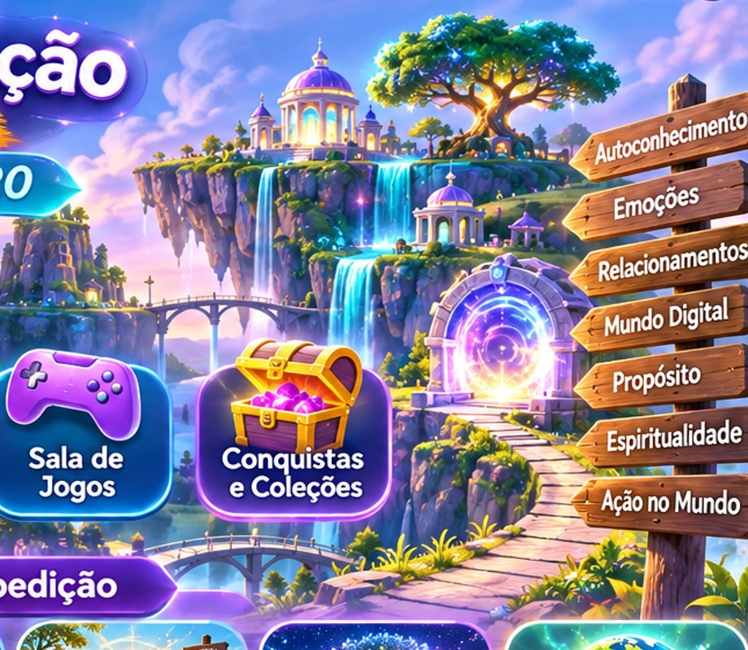

6 brincadeiras • 3 fases cada
Aventura Cinematográfica
Escolha uma brincadeira. Leia a situação, toque em uma resposta e veja a explicação. Depois avance para a próxima fase. Você pode tentar novamente sempre que quiser.
Começar as brincadeiras ↓
As atividades são educativas e servem para refletir e aprender. Elas não avaliam o valor ou a personalidade de ninguém.
← Voltar à página inicial